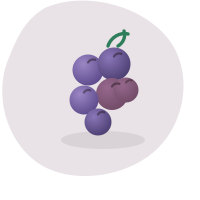
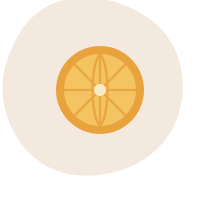
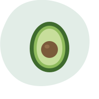
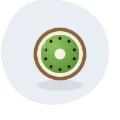
SINAPTIX traduce la ciencia de la nutrición en asesoría concreta para tu rendimiento cognitivo: memoria, foco y energía mental, sostenidos desde lo que comes.
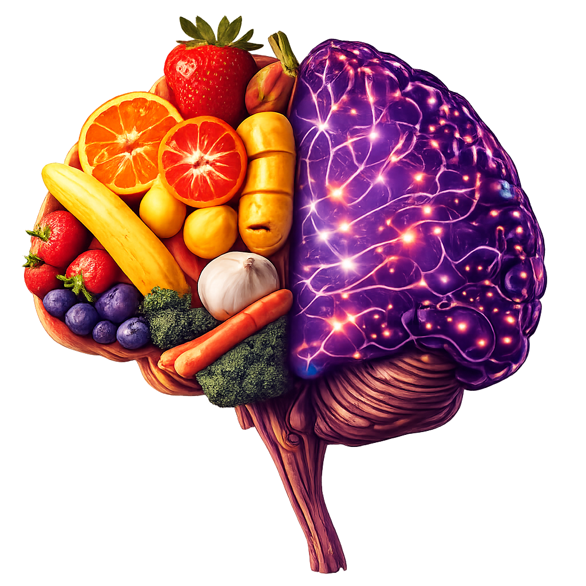
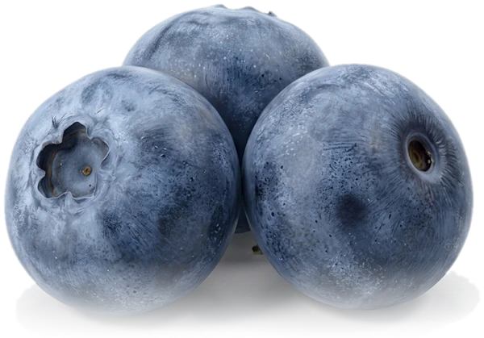
En SINAPTIX partimos de una idea simple: la mente no funciona aislada del cuerpo que la sostiene. Cada decisión alimentaria, lo que se come, cuándo y en qué combinación, deja huella en la manera en que pensamos, recordamos y sostenemos la atención durante el día.
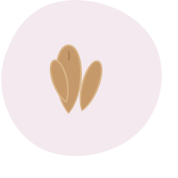
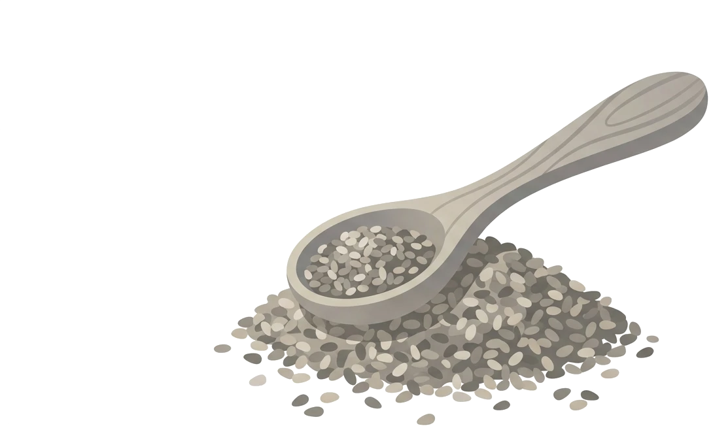
Revisamos tus hábitos actuales, tu carga mental (trabajo, estudio, estrés) y tu relación con la comida a lo largo del día.
Diseñamos pautas concretas, qué, cuándo y en qué combinación comer, alineadas a tus horarios de mayor exigencia cognitiva.
Seguimiento quincenal para ajustar el plan según tu energía, tu sueño y tus resultados reales, no según una tabla fija.
Medimos avances en foco, memoria de trabajo y fatiga mental percibida, y definimos el siguiente ciclo.
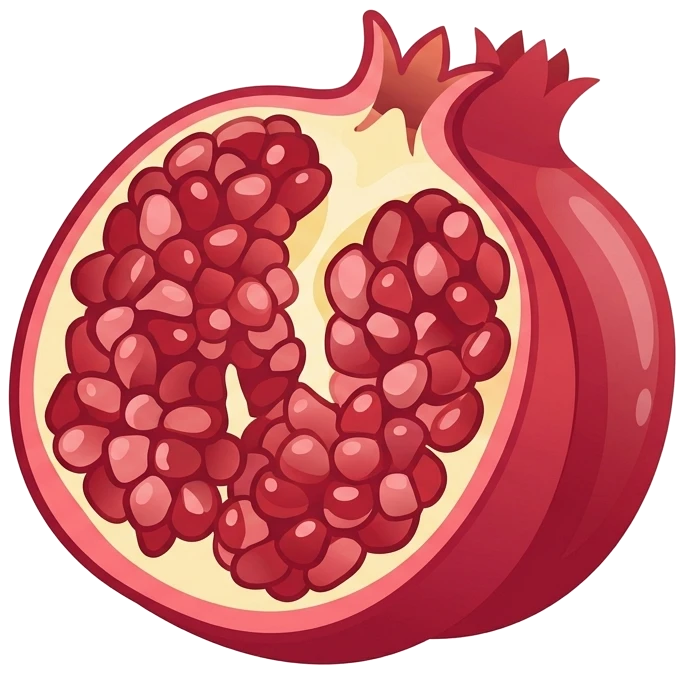
Los consejos amilenticios de SINAPTIX se organizan alrededor de cuatro grupos de nutrientes con evidencia sobre función cognitiva.
Sostén estructural de las membranas neuronales; asociados a memoria y estabilidad de ánimo.
Ayudan a proteger el tejido cerebral del desgaste oxidativo acumulado en jornadas exigentes.
Interviene en la producción de neurotransmisores implicados en atención y memoria de trabajo.
El eje intestino-cerebro y una hidratación adecuada inciden directamente en la claridad mental.
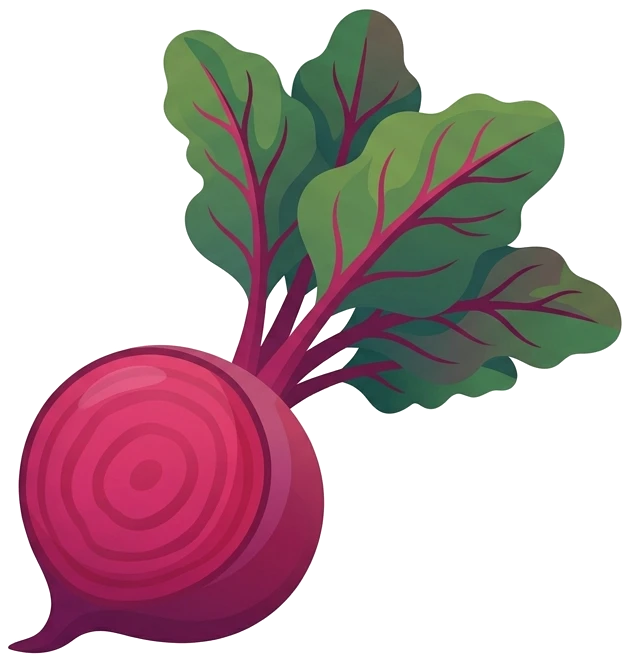
Profesionales con jornadas de alta exigencia mental
Estudiantes en época de exámenes o tesis
Equipos que buscan sostener foco durante el día
Personas en procesos de adultez con fatiga mental
Cambié la forma de organizar mis comidas antes de las juntas largas y noté la diferencia en la tarde.
El seguimiento quincenal fue clave: el plan se ajustaba a como iba mi semana, no al revés.
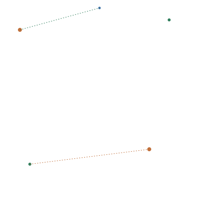
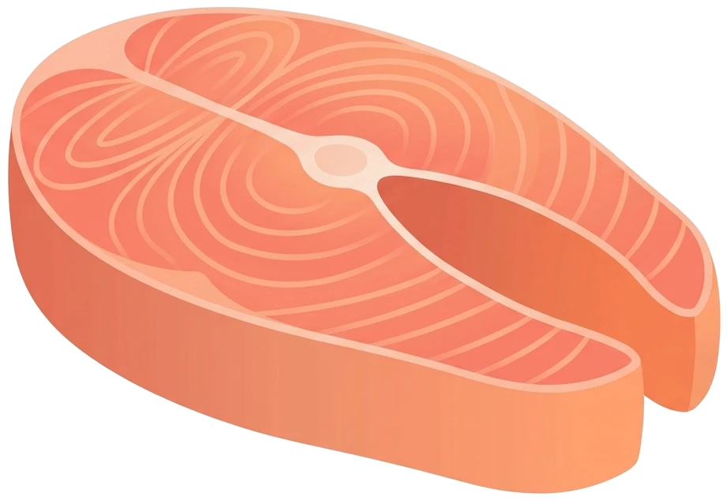
Escríbenos y cuéntanos tu rutina; te respondemos con el primer paso hacia tu plan de neuroalimentación.
hola@sinaptix.com